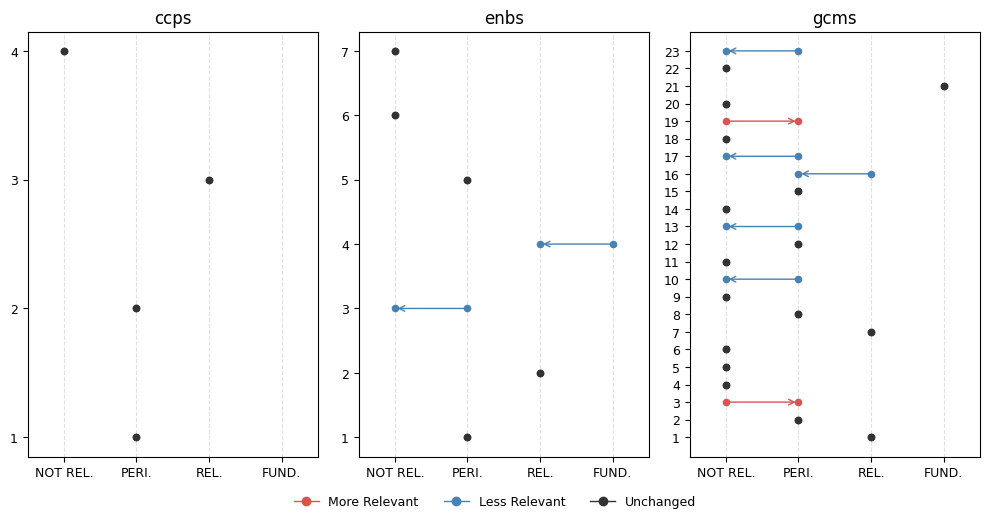
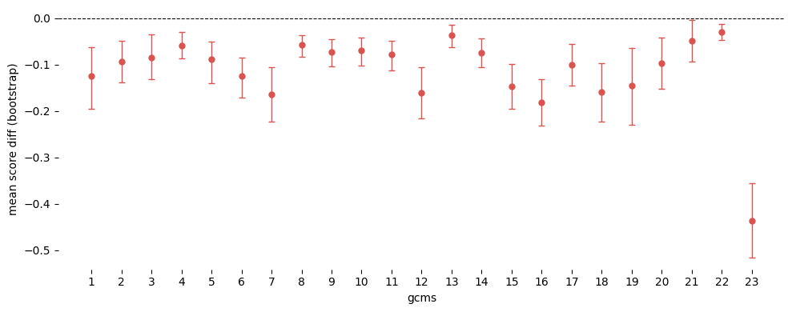
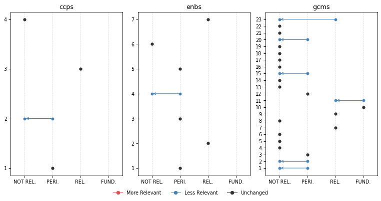

ROOT_PATH = Path.home() / 'iomeval'
DATA_PATH = ROOT_PATH / 'data'
RESULTS_PATH = DATA_PATH/ 'results'
EVALS_PATH = ROOT_PATH / 'nbs/files/test/evaluations.json'
# Contains latest backed up data before new deployment
LATEST_TAG_PATH = Path.home() / 'tagapp/backups/20260311_115159/data'
evals = load_evals(EVALS_PATH)Changes
Compare two versions of the saved mappings, such as before and after a prompt change, and report the changes to domain experts
The mappings of a report change when the prompts, the model or the pipeline change. This module compares the results saved before and after such a change, report by report and theme by theme. It computes score and rank differences, tests them across reports, plots them, and writes comparison cells into a SolveIt dialog for domain experts to review.
Setup
# Reports requested by IOM CED evaluators for assessment
lut = (Path().home() / 'iomeval/data/requester_by_report_id.json').read_json()
evls_test = L(lut.keys())
evls_test[:2]['4341695461234eee3deb51ac68871109', '6c3c2cf3fa479112967612b0baddab72']# To be used for usage examples below
evl = evls_test[0]; evl'4341695461234eee3deb51ac68871109'Utils
get_deployed_ids
def get_deployed_ids(
dir:pathlib.Path, # source directory
):List of report IDs currently deployed (from tagapp backup)
get_deployed_ids(LATEST_TAG_PATH)[:2]['8dd2261100ff5d714e73b411eed043d5', '1d7e6d2d445145d1d350b48b72b36681']load_result
def load_result(
eval_id:str, # evaluation report id
dir:pathlib.Path, # path to directory containing results `.json` files
):Load a result JSON by eval_id from base_path
For instance:
r = load_result('8dd2261100ff5d714e73b411eed043d5', RESULTS_PATH);
print(r.keys()), print(r['mappings'].keys());dict_keys(['id', 'report_url', 'meta', 'docs', 'curation_status', 'selected_headings', 'mappings', 'timestamp'])
dict_keys(['enbs', 'ccps', 'gcms', 'outs'])is_remapped
def is_remapped(
eval_id, # evaluation report id
dir_new, # path to current results
dir_old, # path to backup results
):Check if report mappings differ between current results and deployed backup
For instance:
is_remapped('8dd2261100ff5d714e73b411eed043d5', DATA_PATH/'results', LATEST_TAG_PATH)Trueinfo_evl
def info_evl(
evl_id, # Evaluation ID
):Find the evaluation evl_id in the notebook’s evals
info_evl('0d4309b702e00faac631be8d609934ce')Fifth Evaluation of the IOM Development Fund
Year: 2025 | Organization: IOM | Countries: Worldwide
Documents: 5 available
ID: 0d4309b702e00faac631be8d609934ce
Data processing
mappings2df
def mappings2df(
evl_id:str, # evaluation ID
data_path:pathlib.Path, # path to results data
)->pandas.DataFrame: # one row per (mapping_type, theme)Flatten a result’s mappings into a DataFrame.
For instance:
print(mappings2df(evl, RESULTS_PATH).head()) mapping_type theme_id theme_title score
0 enbs 1 Workforce 0.42
1 enbs 2 Partnership 0.72
2 enbs 3 Funding 0.38
3 enbs 4 Data and evidence 0.18
4 enbs 5 Learning and Innovation 0.45delta_df
def delta_df(
evl_id:str, # evaluation ID
new_path:pathlib.Path, # path to new results
old_path:pathlib.Path, # path to old results
)->pandas.DataFrame: # merged DataFrame with score_old/score_newCompare old and new mappings for a report.
For instance:
print(delta_df(evl, RESULTS_PATH, LATEST_TAG_PATH).head()) mapping_type theme_id theme_title_x \
0 ccps 1 Integrity, Transparency and Accountability
1 ccps 2 Equality, Diversity & Inclusion
2 ccps 3 Protection-centred
3 ccps 4 Environmental Sustainability
4 enbs 1 Workforce
score_old theme_title_y score_new
0 0.48 Integrity, Transparency and Accountability 0.52
1 0.38 Equality, Diversity & Inclusion 0.30
2 0.72 Protection-centred 0.66
3 0.12 Environmental Sustainability 0.05
4 0.48 Workforce 0.42 delta_df(evl, RESULTS_PATH, LATEST_TAG_PATH).query("mapping_type=='gcms' and theme_id=='23'")| mapping_type | theme_id | theme_title_x | score_old | theme_title_y | score_new | |
|---|---|---|---|---|---|---|
| 26 | gcms | 23 | Strengthen International Cooperation And Global Partnerships For Safe, Orderly And Regular Migration | 0.72 | Strengthen international cooperation and global partnerships for safe, orderly and regular migration | 0.2 |
Transforms
add_diffs
def add_diffs(
df:pandas.DataFrame, # dataframe to transform
):Add score_diff and new/dropped flags to a comparison DataFrame
add_ranks
def add_ranks(
df:pandas.DataFrame, # dataframe to transform
):Add old/new ranks (within each mapping_type, descending score) and rank_diff
add_pct_change
def add_pct_change(
df, # dataframe to transform
min_score:float=0.05, # minimum score to consider for pct change calculations
):Add percentage change, treating old scores below min_score as NaN to avoid division noise
For instance:
df = delta_df(evl, RESULTS_PATH, LATEST_TAG_PATH).pipe(add_diffs).pipe(add_ranks).pipe(add_pct_change)df.head()| mapping_type | theme_id | theme_title_x | score_old | theme_title_y | score_new | score_diff | is_new | is_dropped | rank_old | rank_new | rank_diff | pct_change | |
|---|---|---|---|---|---|---|---|---|---|---|---|---|---|
| 0 | ccps | 1 | Integrity, Transparency and Accountability | 0.48 | Integrity, Transparency and Accountability | 0.52 | 0.04 | False | False | 2 | 2 | 0 | 8.333333 |
| 1 | ccps | 2 | Equality, Diversity & Inclusion | 0.38 | Equality, Diversity & Inclusion | 0.30 | -0.08 | False | False | 3 | 3 | 0 | -21.052632 |
| 2 | ccps | 3 | Protection-centred | 0.72 | Protection-centred | 0.66 | -0.06 | False | False | 1 | 1 | 0 | -8.333333 |
| 3 | ccps | 4 | Environmental Sustainability | 0.12 | Environmental Sustainability | 0.05 | -0.07 | False | False | 4 | 4 | 0 | -58.333333 |
| 4 | enbs | 1 | Workforce | 0.48 | Workforce | 0.42 | -0.06 | False | False | 4 | 4 | 0 | -12.500000 |
df.sort_values('score_diff', key=abs, ascending=False).head(5)| mapping_type | theme_id | theme_title_x | score_old | theme_title_y | score_new | score_diff | is_new | is_dropped | rank_old | rank_new | rank_diff | pct_change | |
|---|---|---|---|---|---|---|---|---|---|---|---|---|---|
| 26 | gcms | 23 | Strengthen International Cooperation And Global Partnerships For Safe, Orderly And Regular Migration | 0.72 | Strengthen international cooperation and global partnerships for safe, orderly and regular migration | 0.20 | -0.52 | False | False | 5 | 11 | -6 | -72.222222 |
| 23 | gcms | 20 | Minimize the adverse drivers and structural factors that compel people to leave their country of origin | 0.35 | Promote faster, safer and cheaper transfer of remittances and foster financial inclusion of migrants | 0.05 | -0.30 | False | False | 10 | 16 | -6 | -85.714286 |
| 7 | enbs | 4 | Data and evidence | 0.38 | Data and evidence | 0.18 | -0.20 | False | False | 6 | 6 | 0 | -52.631579 |
| 6 | enbs | 3 | Funding | 0.55 | Funding | 0.38 | -0.17 | False | False | 3 | 5 | -2 | -30.909091 |
| 27 | gcms | 3 | Provide accurate and timely information at all stages of migration | 0.52 | Provide accurate and timely information at all stages of migration | 0.35 | -0.17 | False | False | 7 | 6 | 1 | -32.692308 |
All evaluations processed
all_deltas
def all_deltas(
evl_ids:list, # evaluation IDs to compare
dir_new:pathlib.Path, # path to new results
dir_old:pathlib.Path, # path to old results
)->pandas.DataFrame: # combined DataFrame across all reportsBuild a combined comparison DataFrame for multiple reports.
For instance:
dfs = all_deltas(evls_test, RESULTS_PATH, LATEST_TAG_PATH)dfs.iloc[0]mapping_type ccps
theme_id 1
theme_title_x Integrity, Transparency and Accountability
score_old 0.48
theme_title_y Integrity, Transparency and Accountability
score_new 0.52
score_diff 0.04
is_new False
is_dropped False
rank_old 2
rank_new 2
rank_diff 0
pct_change 8.333333
evl_id 4341695461234eee3deb51ac68871109
Name: 0, dtype: objectprint(dfs[dfs.evl_id == '760568a15e144bcfb88dbbd50247dc51'][['mapping_type', 'theme_id', 'rank_old', 'rank_new', 'rank_diff']].query('mapping_type == "gcms"').head(14)) mapping_type theme_id rank_old rank_new rank_diff
533 gcms 1 14 13 1
534 gcms 10 16 14 2
535 gcms 11 17 18 -1
536 gcms 12 15 17 -2
537 gcms 13 21 20 1
538 gcms 14 18 16 2
539 gcms 15 8 10 -2
540 gcms 16 1 3 -2
541 gcms 17 9 6 3
542 gcms 18 6 4 2
543 gcms 19 3 1 2
544 gcms 2 13 12 1
545 gcms 20 13 8 5
546 gcms 21 12 15 -3theme_stats
def theme_stats(
dfs, # pandas dataframe with columns ['mapping_type', 'theme_id', 'score_diff']
ci:tuple=(2.5, 97.5), # confidence interval percentiles
n:int=10000, # number of bootstrap samples
):Bootstrap CI and Wilcoxon test for each (mapping_type, theme_id)
print(theme_stats(dfs).head()) mapping_type theme_id mean ci_low ci_high stat pvalue
0 ccps 1 -0.023103 -0.0630 0.0160 66.5 0.407254
1 ccps 2 -0.024734 -0.0820 0.0330 69.5 0.304564
2 ccps 3 -0.028679 -0.0775 0.0215 75.5 0.270259
3 ccps 4 -0.093091 -0.1310 -0.0625 0.0 0.000115
4 enbs 1 -0.034491 -0.0880 0.0220 49.0 0.192736Visualization
Per eval
plot_score_diffs_bar
def plot_score_diffs_bar(
df:pandas.DataFrame, # Deltas from `all_deltas`, for one report
):Bar chart of score diffs (new - old) per theme, coloured by direction, one panel per mapping type
For instance:
plot_score_diffs_bar(dfs[dfs.evl_id == '0d4309b702e00faac631be8d609934ce'])
plot_rank_changes
def plot_rank_changes(
df:pandas.DataFrame, # Deltas from `all_deltas`, for one report
ignore:str | list='outs', # Mapping types to leave out, such as `'outs'` or `['outs', 'ccps']`
**kwargs
):Slope chart of rank changes (old -> new) per mapping type, coloured by direction
For instance:
plot_rank_changes(dfs[dfs.evl_id == '22cac1c000836253adc445993e101560'], ignore='outs', figsize=(10, 5), dpi=77)
score_band
def score_band(
score, # Relevance score, from 0 to 1
)->str: # `'FUNDAMENTAL'`, `'RELEVANT'`, `'PERIPHERAL'` or `'NOT RELEVANT'`Name the band of score
is_fundamental
def is_fundamental(
score, # Relevance score, from 0 to 1
):Check whether score is in the FUNDAMENTAL band
score_band names the band of a score. The bands match the score ranges in the mapping prompts: FUNDAMENTAL from 0.84, RELEVANT from 0.66, PERIPHERAL from 0.34, and NOT RELEVANT below.
plot_band_changes
def plot_band_changes(
df, # Deltas from `all_deltas`
evl_id:NoneType=None, # Report to plot; `None` plots every row of `df`
ignore:str='outs', # Mapping types to leave out
**kwargs
):Dot-arrow plot of score band changes (old -> new) per theme, one panel per mapping type
plot_band_changes(dfs, evl_id='49d2fba781b6a7c0d94577479636ee6f', figsize=(10, 5))
All
plot_score_diffs
def plot_score_diffs(
dfs:pandas.DataFrame, # Deltas from `all_deltas`
mapping_type, # Mapping type with integer theme IDs, such as `'gcms'`
xlabel:str='Theme', # x-axis label
col:str='score_diff', # Column to plot
**kwargs
):Violin plot of score diffs (new - old) per theme, for one mapping type
For instance:
plot_score_diffs(dfs, 'gcms', 'GCM objective', figsize=(12, 6), dpi=77)
plot_theme_stats
def plot_theme_stats(
ts, # theme stats dataframe
mapping_type, # mapping type to plot
alpha:float=0.05, # alpha threshold for significance
show_pval:bool=False, # whether to show p-values
**kwargs
):Forest plot of bootstrap CIs per theme for a given mapping type, annotated with p-value
df_stats = theme_stats(dfs)plot_theme_stats(df_stats, 'gcms', figsize=(10, 4))
Reporting
The reporting functions write a comparison of one report’s old and new mappings into a SolveIt dialog, for domain experts to review. They focus on the fundamental themes, which score at least FUNDAMENTAL (0.84). They show the old and new reasoning of each such theme side by side.
get_theme
def get_theme(
result:dict, # loaded .json tagging result
mapping_type, # 'gcms', 'enbs', 'ccps', 'outs'
theme_id:str, # theme ID
):Get a single theme dict from a result by mapping_type and theme_id
For instance:
old_r,new_r = load_result(evl, LATEST_TAG_PATH), load_result(evl, RESULTS_PATH)
get_theme(new_r, 'gcms', '1'){'theme_id': '1',
'theme_title': 'Collect and utilize accurate and disaggregated data as a basis for evidence-based policies',
'relevance_score': 0.3,
'reasoning': 'The excerpts contain limited but tangible references to data and information systems. The Migration Information and Data Analysis System (MIDAS) is mentioned as a specific activity under BMM Phase III, and digital data platforms (GIZ data platform and IOM SharePoint) are noted as improving monitoring and coordination. However, these references are brief and appear as examples within broader discussions of programme activities rather than as subjects of dedicated analysis. There is no substantive examination of data collection methodologies, disaggregation, or evidence-based policymaking processes that would align with the core actions under Objective 1. A synthesis specialist might note the MIDAS reference as a peripheral data point, but the report does not appear to offer meaningful evidence on this objective based on the excerpts reviewed.'}theme_md
def theme_md(
mapping_type:str, # `'gcms'`, `'enbs'`, `'ccps'` or `'outs'`
theme_id:str, # Theme ID
old_r:dict, # Old result, from `load_result`
new_r:dict, # New result, from `load_result`
row:pandas.Series, # The theme's row in the deltas
):Render one theme’s old and new scores, ranks and reasoning as Markdown
theme_md shows the old and new scores and ranks of a theme in a table, and its old and new reasoning in collapsible blocks. For instance:
row = dfs[dfs.evl_id == evl].iloc[0]
print(theme_md(row.mapping_type, row.theme_id, old_r, new_r, row))#### CCPS 1: Integrity, Transparency and Accountability
| score_old | score_new | rank_old | rank_new | rank_diff |
|---|---|---|---|---|
| 0.48 | 0.52 | 2 | 2 | 0 |
<details><summary>Reasoning (old)</summary>This report contains some content that touches peripherally on accountability and transparency themes, but these are not primary evaluation foci. The evaluation examines IOM's coordination, reporting mechanisms, and monitoring systems within the BMM programme context. Findings note that 'reporting mechanisms were well-structured' and 'IOM's structured monitoring and reporting systems ensured accountability and adaptive management.' The report also discusses efficiency in coordination and financial management. However, integrity, transparency, and accountability are not evaluated as distinct institutional commitments—they appear as operational attributes when assessing programme efficiency. There is no dedicated analysis of IOM's accountability frameworks, transparency practices, or integrity systems. A synthesis specialist might note the brief mentions of monitoring and reporting effectiveness, but the analytical depth on accountability as an institutional priority is limited. The report's focus is on programme effectiveness, relevance, and sustainability rather than IOM's organizational accountability mechanisms.</details>
---
<details><summary>Reasoning (new)</summary>The excerpts reviewed contain some content that may have marginal relevance for a synthesis on Cross-cutting Priority 1 (Integrity, Transparency and Accountability). The evaluation discusses monitoring and reporting systems, noting that 'reporting mechanisms were well-structured and described as straightforward and manageable by staff,' and that IOM's 'structured monitoring and reporting systems ensured accountability and adaptive management.' Recommendation 4 addresses procurement and financial coordination, touching on transparency in processes and proactive communication of timelines with stakeholders. There are also references to the need for clearer roles and responsibilities, and to improving contingency planning — all of which peripherally relate to accountability practices. However, based on what the excerpts reveal, integrity, transparency, and accountability mechanisms do not appear to be analyzed as distinct institutional commitment themes; they surface as contextual elements within broader discussions of efficiency and programme management. No dedicated findings on IOM's integrity frameworks, whistleblowing mechanisms, or organizational accountability culture are visible in the excerpts. A synthesis specialist might note the brief discussion of monitoring and reporting approaches and the procurement-related recommendations, but would likely prioritize sources with more substantive treatment of this institutional commitment area. It is possible the full report contains more on this topic than the excerpts suggest, but this cannot be assumed.</details>fundamental_transitions
def fundamental_transitions(
df:pandas.DataFrame, # deltas DataFrame for a single report
exclude_types, # mapping types to exclude
):Rows where fundamental status changed between old and new score.
add_theme_cells
async def add_theme_cells(
mid, # ID of the dialog message to add after
label, # Heading for the group of themes
rows, # `(mapping_type, theme_id, row)` tuples, one per theme
old_r, # Old result, from `load_result`
new_r, # New result, from `load_result`
)->str: # ID of the last message addedAdd a heading, then one theme_md cell per theme, to the dialog
fundamental_themes
def fundamental_themes(
df, # Deltas for one report
score_col, # `'score_old'` or `'score_new'`
exclude_types, # Mapping types to leave out
)->list: # `(mapping_type, theme_id, theme_title)` tuplesList the themes whose score_col is in the FUNDAMENTAL band
add_fundamental_summary
async def add_fundamental_summary(
mid, # ID of the dialog message to add after
df, # Deltas for one report
exclude_types, # Mapping types to leave out
old_r, # Old result, from `load_result`
new_r, # New result, from `load_result`
)->str: # ID of the message addedAdd a table of the fundamental themes, old and new, to the dialog
gen_report_cells
async def gen_report_cells(
rpt_id, # Report ID
dfs, # Deltas of every report, from `all_deltas`
old_results_path, # Folder of the old results
new_results_path, # Folder of the new results
exclude_types:tuple=('outs',), # Mapping types to leave out
plot_kwargs:NoneType=None, # Passed to `plot_band_changes`, such as `figsize`
):Add cells to the current dialog that compare the old and new mappings of report rpt_id
gen_report_cells adds a comparison of one report to the current SolveIt dialog. It adds the report title, then a code cell that plots the band changes with plot_band_changes, without running it. It then adds a table of the fundamental themes, old and new. Last, it adds a comparison cell for each theme that stopped or started being fundamental. It writes the cells with dialoghelper’s add_msg, which needs a SolveIt dialog.
For instance:
await gen_report_cells(evl, dfs, LATEST_TAG_PATH, RESULTS_PATH)'_6240cbb5'Final External Evaluation: Better Migration Management Programme Phase III
plot_band_changes(dfs[dfs.evl_id == '4341695461234eee3deb51ac68871109'], figsize=(10, 5), dpi=77)
Fundamental Themes | | Mapping | Theme | Score | |—|—|—|—| | old | gcms | 10: Prevent, Combat And Eradicate Trafficking In Persons In The Context Of International Migration | 0.88 | | old | gcms | 11: Manage Borders In An Integrated, Secure And Coordinated Manner | 0.85 | | new | gcms | 10: Prevent, Combat And Eradicate Trafficking In Persons In The Context Of International Migration | 0.85 |
⬇️ No Longer Fundamental
GCMS 11: Manage borders in an integrated, secure and coordinated manner
| score_old | score_new | rank_old | rank_new | rank_diff |
|---|---|---|---|---|
| 0.85 | 0.82 | 2 | 2 | 0 |